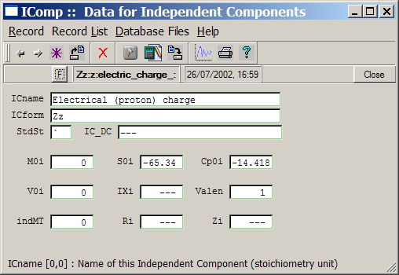
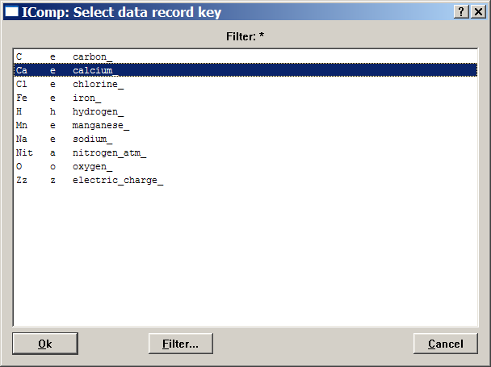
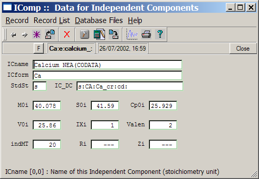
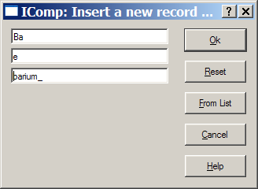
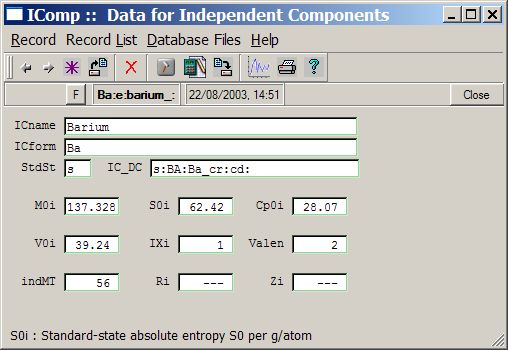

GEM-Selektor version 2-PSI GEM-Selektor version 2-PSI
GEM-Selektor version 2-PSI GEM-Selektor version 2-PSIPrevious Page Back to Start Page
(29) Adding an Independent Component definition record.
A new IComp
record must be created only in the case if you want to add a chemical
element (with its species and phases) that is not available in
thermodynamic databases
included into the downloadable GEMS-PSI package (the available elements
can be seen in the "TryNPTDB" project included in GEMS installation
package; please, re-open and close your current project after you have
looked into the "TryNPTDB" one). Otherwise, proceed to the next page.
To get access to IComp records, click on the "Independent Components (IComp)" button on the Database management dialog seen at the end of previous page. This will open the IComp window:

You can use menus and/or
toolbar buttons (look for tooltips) to browse records, select and load
one from
the list, and so on. First of all, let us take a look on a list of all
IComp
records avaialble in the "Carbonat" modelling project.
This can be done by clicking on the "Display Selected Record" button
 or simply using the "Record" "Display" menu command,
which will show a (scrollable) list of all available records. Using
left mouse button, you can select any record key in the list (calcium
Ca, for instance).
or simply using the "Record" "Display" menu command,
which will show a (scrollable) list of all available records. Using
left mouse button, you can select any record key in the list (calcium
Ca, for instance).

A Double-click on the selection (or click on the "Ok" button) will get the record from database file and display its contents in the IComp window:

As usual, you can read
tooltips or F1 help pages to learn about the data
fields.
Any record can be used as a template for "cloning" a new record - the
easiest way to extend GEMS databases.
Suppose that we want to
add
barium (Ba) to the IComp record chain (and thus extend the "Carbonat"
project
with barium and its chemical species and solid phases). Just
execute
the "Record" "New(Clone)..." menu command and change the key of a new
record
to be created as follows:

Click "Ok" when ready; you
will get back to the IComp window. What remains is to edit some data
fields (you may need reference literature and data source for that).
The resulting data for barium should look like this:

To save the data into
database file, click on the "Save current record" toolbar button  or execute the "Record"
"Save" menu command. Obviously, more records can be added in this way
if necessary.
or execute the "Record"
"Save" menu command. Obviously, more records can be added in this way
if necessary.
Note that the data for
barium and its compounds are actually available in the Nagra/PSI
chemical thermodynamic database; this exercise shows how to add the
data "by hand" using barium
as an example.
Now, you can close the
IComp window and get back to the "Database Management" dialog.